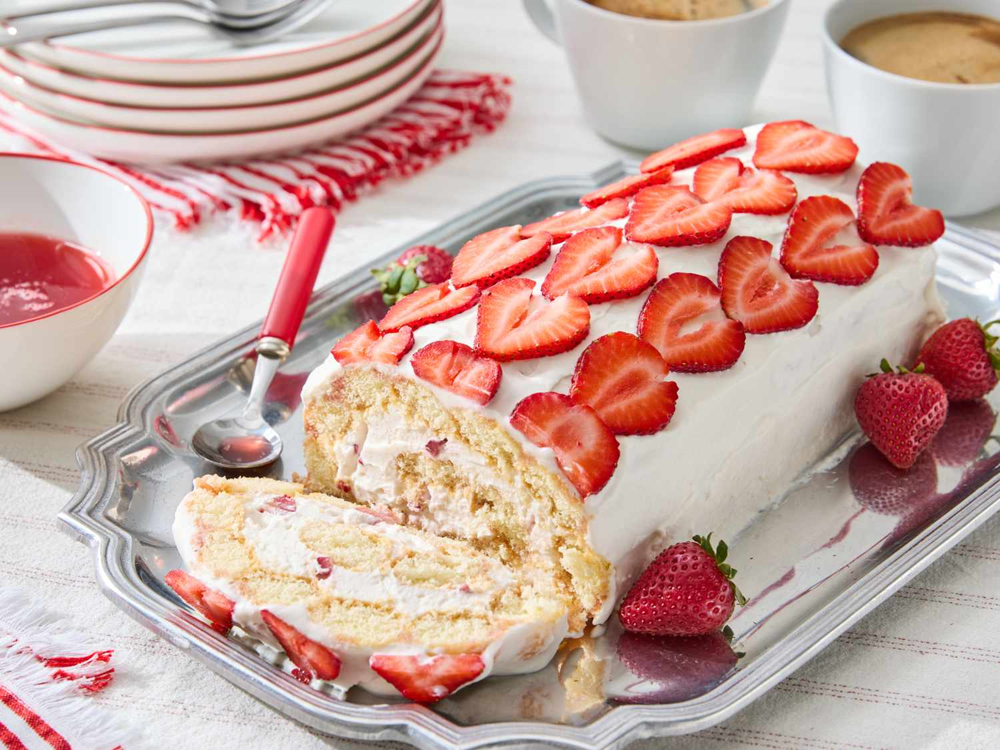

Strawberry Tiramisu Roll

This strawberry tiramisu roll is a pretty, tasty, and fun variation on tiramisu. The spiraled layers of mascarpone cream and ladyfingers are revealed when sliced. Use the ripest, juiciest berries you can find for the best flavor.
Ingredients
- 1 pound strawberries, hulled and sliced
- 1/2 cup water
- 3/4 cup white sugar
- 1 tablespoon lemon juice
- 1 cup heavy cream
- 1 (8 ounce) container mascarpone cheese, softened
- 1/2 cup confectioner's sugar
- 1/4 cup strawberry syrup (recipe above)
- 1 teaspoon vanilla extract
- 1 (7 ounce) package crisp (1x4-inch) ladyfingers, such as Mathilde Vicenzi Vicenzovo
- 1 pound strawberries, hulled
Directions
- Gather all ingredients.
- For strawberry syrup, place sliced strawberries and water in a saucepan over medium-high heat. Using a potato masher or a fork, crush the berries. Bring berries to a boil, then reduce heat to medium-low and simmer about 5 minutes.
- Remove saucepan from heat. Pour berries into a fine-mesh strainer set over a glass measuring cup. Using the back of a ladle or spoon, press on the berry solids to squeeze out as much juice as possible (you should have about 1 1/4 cups juice). Discard solids.
- Return strawberry juices to the pan, and add white sugar and lemon juice. Bring to a boil, stirring to dissolve the sugar. Reduce heat and simmer until mixture thickens slightly, 10 to 15 minutes. Remove from heat and transfer to a bowl; cover and chill strawberry syrup until cold, about 1 hour.
- For mascarpone cream, beat heavy cream in a bowl with an electric mixer on medium until stiff peaks form. Beat mascarpone, confectioner's sugar, 1/4 cup Strawberry Syrup and vanilla in a separate bowl with the mixer until smooth. Fold in whipped cream. Transfer 1 cup mascarpone cream to a bowl; cover and chill until ready to use.
- From the remaining 1 pound strawberries, chop enough berries into 1/2-inch pieces to measure 3/4 cup. Fold chopped strawberries into remaining mascarpone cream mixture. Save remaining strawberries for decorating cake roll.
- To assemble, line a 15x10-inch baking pan with plastic wrap, allowing about 6 inches of wrap to extend past the short ends of the pan. Dip 12 ladyfingers, one by one, into the remaining Strawberry Syrup to coat and arrange side by side lengthwise in a tight row covering the left long side of the pan. Repeat with 12 remaining ladyfingers to cover the other half of the pan, ensuring that all ladyfingers are touching closely and there are no gaps. Cover and chill any remaining syrup for serving.
- Evenly spread mascarpone cream containing chopped strawberries over the ladyfingers.
- Using the plastic wrap on one short end of the pan, carefully roll the filled ladyfinger rectangle up into a log. Wrap log tightly with plastic wrap and roll gently to form an even cylindrical shape. Place roll in the refrigerator and chill at least 4 hours or up to overnight.
- To serve, carefully unwrap roll and place on a serving platter. Spread reserved mascarpone cream over the roll to coat. Slice remaining strawberries and use to decorate the exterior of the roll.
- Slice roll and serve with remaining Strawberry Syrup.
Home